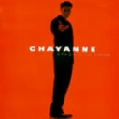
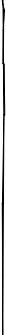

> Canción de julio “Soy como un niño” Chayanne Sólo veo el cielo azul cuando el cielo eres tú y me vuelvo un niño de repente Así Tengo ganas de jugar de reir pero llorar Ni siquiera soy adolescente Ésta es mi ley Un niño siempre es el rey del amor *Yo te quiero con todo el corazón Infante de mente, inocente Soy como un niño cuando hablo de amor **Porque te deseo sin ningún pudor Puro cariño, soy un niño Soy como un niño cuando hablo de amor Sé que tengo que crecer controlarme la pasión aprender a sujetar mi instinto Yo no puedo Ésta es mi ley Un niño siempre es el rey del amor *,** Repetir Soy como un niño (Soy un niño) Soy como un niño Soy como un niño cuando hablo de amor Oh, oh Ésta es la ley Ésa es la ley del amor *,** Repetir Gramática: conjunción “que” 従属節を導く接続詞 “que” Sé que tengo que crecer. (I know that I’ve got to grow up.) 英語で、「知っていること」「言ったこと」「考えていること」などの中身を表現する従属節を動詞の “know”, “say”, “tell”, “think” などの後に導いてくるのに使われる接続詞の “that” に相当するのが、この “que” です。関係代名詞の “que” と同様にアクセントはつきません。


